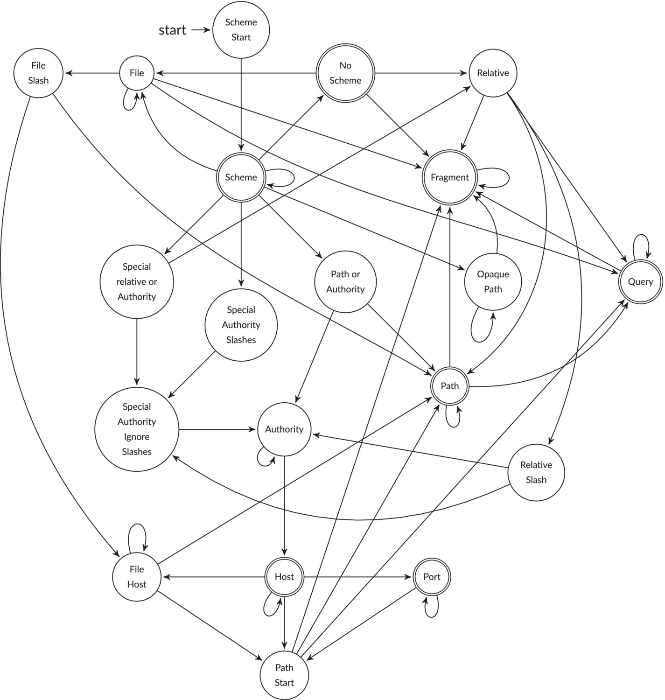
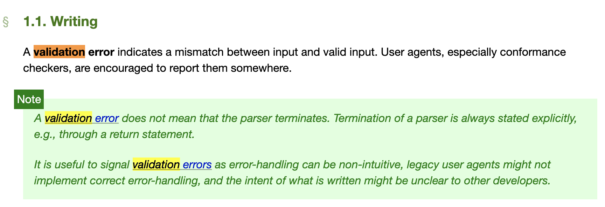
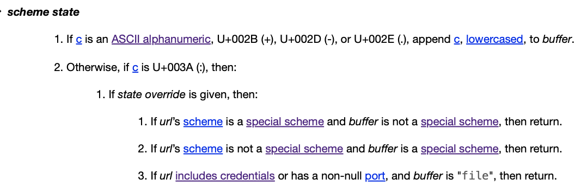
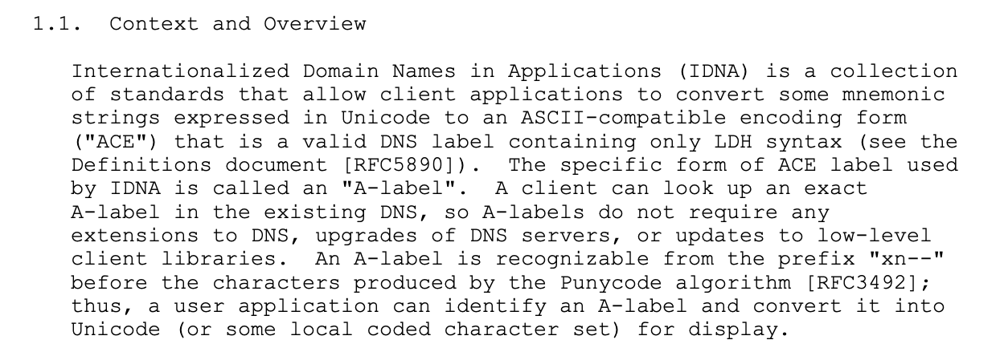

Class ImUrl
- All Implemented Interfaces:
HasTextBox,Values,Serializable
This class parses a URL string into an ImUrl object, and can convert it back to a string. You can access the various parts of the URL using fields and it is an immutable object.
It also allows clients to create new URL objects by "setting" various parts of an existing URL.
Once we have an ImUrl object - the idea is that we can convert it to a Java URL object and then send an HTTP style query to some website using the built-in Java features - see APIRequest.
Why this class?
We originally had a URL class that was a thin immutable wrapper around the Java URL class - ie just use the Java URL class to do the parsing of the URL string - but that class only supports a very old version of the relevant standard so we felt we should do more in this area.
In particular, it is not able to handle URLs like this:
https://räksmörgås.josefsson.org
What is meant to happen here is that the URL parser converts this using the IDNA name mapping standard:
https://datatracker.ietf.org/doc/html/rfc5891#section-4.2.3
to get this:
https://xn--rksmrgs-5wao1o.josefsson.org
This mapping is specified in
https://datatracker.ietf.org/doc/html/rfc3490
I am not sure why this particular mapping was chosen.
So we are using the IBM icu4j classes to do the necessary IDNA name mappings.
If we supply the above IDNA-mapped URL to the Java URL class then it will work correctly - it just doesn't know how to do the IDNA mapping on the original unicode string.
Why is parsing URLs so... messy?
If you read the WhatWG standard document you might be surprised to find that, apart from defining a few sets of codepoints and explaining some broad concepts, the main meat of the standard is a pseudocode description of how to do the parsing. I suppose you could either regard this as a refreshingly practical way to explain how to implement the standard or an admission that it's so damn complicated that this is the only way to get through it. It certainly makes it difficult to get an overview of what is expected by having to plough through about eight pages of pseudocode.
In "Parsing millions of URLs per second" (https://onlinelibrary.wiley.com/doi/10.1002/spe.3296?af=R) which discusses a particular implementation of the WhatWG standard (now integrated with Node.js version 20), the authors provide a helpful state-transition diagram to illustrate the parser.

The URL parser state machine.
Obviously, our old friend "history" has a part to play in why things are so complicated. As we have struggled with our implementation we would identify a few main reasons
- The host part is treated very differently from all the other parts
- The file scheme is different from all the other special schemes
- The little-used authority parts (user and password) are very peculiar indeed
- The parsing of "opaque" (ie non-standard) schemes imposes many subtle issues
- The parsing of relative URLs is tricky
We have simplified our task by not attempting to implement 4 and 5 above.
The WhatWG standard
The relevant standard for parsing URLs and their internal representation is the WhatWg standard:
This describes itself as a "living standard" - we are using the version that was updated 25-mar-2024.
We would like to support the WhatWg standard completely but that is too much effort for us to do at the moment.
This has a good overview:
https://onlinelibrary.wiley.com/doi/10.1002/spe.3296?af=R
So there are some restrictions in this implementation:
- It only supports four schemes - http, https, file, ftp because these are the only ones supported by Java "out of the box"
- It doesn't support the jar scheme yet - even though Java does support it "out of the box"
- It only supports absolute URLs
With these restrictions, it does support the WhatWg standard fairly closely.
It passes all of the 296 applicable tests from
https://github.com/web-platform-tests
Does this mean that this class parses URLs in exactly the same way as browsers do?
Alas no. The WhatWg standard is not followed exactly by all browsers. I have tested on Chrome and found many cases where Chrome does something different to the standard. Hey ho.
The standard has many cases where it states that some input causes a validation error:

For the validation errors that don't mean that the parser should terminate, our parser also does not terminate and we currently don't provide any indication that there has been a validation error.
WhatWg's pseudocode has used an approach that parses each part in one or two functions with all the variations noted above being handled by flags being passed to each function with plentiful if tests to do different things in different cases. This does not lead to very comprehensible pseudocode.
In addition, and we don't want you to think we are just complaining for the sake of it here, the extract below is from the spec - with the pseudocode for the scheme state, it is not obvious how we would easily implement section 2.1.3. It requires us to make a decision based on the credentials (user/password) and the port - but these three items have not been parsed yet - if we are following the pseudocode for the state machine. Tricky.

From "Parsing millions of URLs per second":
To illustrate the complexity, our C++ software library implementing the WHATWG URL standard—and little else—has approximately 20,000 lines of code.
We can't help wondering - if the standard authors have decided that code is the easiest way to describe the parsing, would it not have been more helpful to use an actual compilable language so that it would be easier to read and test for implementers.
How widely implemented is the WhatWG standard in browsers?
While we were using the (very useful) website
https://jsdom.github.io/whatwg-url
to better understand the standard (on Chrome on Macos Version 126.0.6478.127) we noticed about 20 different cases where the standard and Chrome disagreed. This is just an ad-hoc observation. We have not tested these cases on other browsers.
The "quick" summary
The basic idea of a WhatWG URL parser is this:
- It takes an input in the form of a string in UTF-16 encoding
- It parses it and converts this to an internal format. If there are "fatal" errors then it should refuse to parse it. For non-fatal errors it should still work.
- It can serialise this internal format to a string that contains only ASCII printable characters.
The spec makes it clear that the string is processed one unicode codepoint at a time. It also usually talks about codepoints rather than characters.
We will also talk about codepoints rather than characters.
The parts of a URL
So if we think about a URL input string as being composed of parts, our first idea might be that it is this (well roughly):
For clarity, I have highlighted the delimiters.
In fact there are a few more parts that we normally forget (or never knew about in the first place):
This means that there are eight parts to a URL. Most of the parts are optional.
Just to be difficult, I am going to say that there are actually nine parts to a URL.
After the scheme part, delimited by ':' there can be a run of slashes, '/' '\'. For the file scheme the number of slashes is significant - so I am going to promote what most people will tell you is a humble delimiter into a full part. So now, (again - roughly) we have this:
The scheme-part is required and the host part is required - except for some cases in the file scheme - this depends on the slashes-part in this case.
The other parts are optional - the file scheme does not allow a port.
If an optional part does not appear in the URL then its default value in the parsed form is considered to be the empty string (sigh - except for the path part, where the default is '/'.
If it does appear but is empty because its start delimiter appears but one of its terminating delimiters follows it immediately, then it is also considered to be the empty string. When the URL is serialised it is represented as if it didn't appear.
We can split the parts into three distinct types based on how the parser handles non-printable ASCII codepoints and percent encoded triplets
Strict
Non-printable ASCII codepoints or percent encoded triplets are not allowed. For these parts we don't talk about the disallowed codepoints in the input - because each part specifies what codepoints are allowed and that is a small set in each case - so considering disallowed codepoints is unnecessary.
These parts are:
- scheme
- slashes
- port
Non-strict
- Non-printable ASCII codepoints are allowed - they will be converted to percent encoded triplets.
- Percent encoded triplets are allowed - they will be passed through unchanged.
- The '%' codepoint is allowed - even if not part of a valid percent encoded triplet - it is passed through unchanged. This behavior is described in the standard as being a non-fatal validation error (except in the authority part) so ... we regard it as allowed behaviour.
So although the spirit of having percent encoded triplets is that they should be decodable to unicode codepoints, there is no validation that this is the case. Any percent encoded triplets are simply passed through unchanged - valid or invalid.
For these parts we do talk about there being disallowed codepoints in the input. These are normally disallowed because it would confuse the parsing. For example, any codepoint that acts as an end delimiter is normally disallowed (but see passwords!).
In order to smuggle them into a part, you can represent them as percent encoded triplets - remember that the parser just passes these through unchanged - and hope that these will be decoded at the server when the URL is used.
These parts are:
- user
- password
- path
- query
- fragment
Host
In the host part, non-printable ASCII codepoints are allowed - although not all will be valid. Some codepoints are identified by the standard as being "forbidden" and others will be rejected by the IDNA name mapping/Punycode algorithm.
Any percent encoded triplets are decoded to unicode characters - if these triplets represent invalid UTF-8 sequences then this will cause a fatal error.
To decode a run of percent encoded triples to unicode characters, the parser converts the triples to octets - each triple defines an octet - and then it treats the run of octets that it has just created as utf-8 encoded bytes and it decodes them to unicode codepoints.
So - there might be code points in the input that are non-printable ASCII codepoints and there might be some that were not in the input but were generated by the process of decoding the percent encoded triplets. These are mapped to printable ASCII using the IDNA mapping (AKA punycode).
Note that it only decodes the runs of triplets themselves - it does not convert the triplets to bytes and then combine them with neighbouring code points and try to decode these.
The only part that this applies to is:
- host
The idea is that once an input has been parsed, the serialised form of it will be parsable into a URL that will have the same serialised form.
If the parsing process detects an error, the standard says that the implementation is encouraged to make the error available somewhere. The standard identifies two types of errors
- fatal errors that stop the URL being parsed
- non-fatal errors - warnings really - although it does not specify how to make the text of the warning available to the user.
We are all used to typing URLs into browser address bars - although this is a little misleading since, the browser does its best to take what you have typed and give you some sort of result - even if it is not a strictly valid URL.
for example you can type
google.com
into most browsers and you will see the google search page.
if you look at what the browser has done you will notice that the url it is actually using is
The browser has added the scheme "https" (or maybe "http") and inserted "://" between that and "google.com" and the web site has redirected you to the actual page.
In Java, if you try this:
new URL("google.com");
You will get an exception:
java.net.MalformedURLException: no protocol: google.com
You can try going through the URI class - but you will get a similar exception.
So, despite what browsers allow, you need to specify the protocol (AKA scheme) at the start of the URL.
For the host there are a number of codepoints that are "forbidden". For all the other parts there are codepoints that are not allowed in the input because they would interfere with the parsing
| optional? | type | start delimiters | end delimiters | disallowed input codepoints | percent encode sets | notes | |
| scheme | no | strict | start of input | ':' | n/a | n/a | No percent encoding allowed |
| slashes | yes | strict | ':' | Not really an end delimiter - ends before a character that is not a '/' or '\' | n/a | n/a | No percent encoding allowed. Must be composed of 0 or more slashes |
| user | yes - except for the file scheme where it is not allowed | non-strict | '/' '\' ':' | ':' | '/' '\' '?' '#' | '/' ':' ';' '=' '@' '[' '\' '\' ']' '^' '|' (and the path encode set) | can't contain '/' '\' '?' or '#' so why they appear in the percent encode set - we don't know |
| password | yes - except for the file scheme where it is not allowed | non-strict | ':' | '@' | '/' '\' '?' '#' | as above | as above |
| host | no - except for the file scheme | host | '/' '\' ':' '@' | '/' '\' ':' '?' '#' end-of-input | '/' '\' '?' '#' ':' '<' '>' '@' '[' ']' '^' '|' (and the c0 controls) and '%' unless it is part of a valid percent encoded triple and that triple is part of a run of triples that can be converted to a valid codepoint ... that is not 'forbidden' | n/a - the host part uses IDNA mapping | The disallowed input codepoints can't be smuggled into a host by percent encoding them. The standard calls them 'forbidden' codepoints. |
| port | yes - except for the file scheme where it is not allowed | strict | ':' | '/' '\' '?' '#' end-of-input | n/a | n/a | must be decimal digits |
| path | yes | non-strict | '/' '\' ':' | '?' '#' end-of-input | '?' '#' | '?' '`' '{' '}' (and the query encode set) | |
| query | yes | non-strict | '?' | '#' end-of-input | '#' | ' ' '"' '<' '>' '#' | |
| fragment | yes | non-strict | '#' | end-of-input | none | ' ' '"' '<' '>' '`' |
So each of the parts is parsed in its own idiosyncratic way. Some of them are very idiosyncratic - to the point of being slightly bonkers (IMHO).
For example, these are valid URLs:
http:::@@{♥~?%#
http:4294967295
http:/\/\/\/\:::::@@@@
We will describe the parts in more detail::
The scheme part (AKA protocol)
Because we only allow four schemes, this is fairly simple.
You can have http, https, file, ftp - and that's it.
You can use upper, lower, mixed case.
The parser will convert the scheme to lowercase before serialising.
The scheme is right-delimited by ':'.
Examples:
http: scheme = "http"
HTTPS: scheme = "https"
FiLE: scheme = "file"
fTp: scheme = "ftp"
The slashes part
After the ':' that is the end delimiter for the scheme, there can be 0 or more slashes - back or forward: '\' '/'
Any slashes after the ':' are ignored (except for the file scheme where they are significant - see below). You could almost consider them a decorative feature!
Examples:
//
/
\
\\
///////
\\\\\\\\\\\
\\\///\\\///\\\\\\\///////
The authority part (user-name and password)
Both parts are optional. For the file scheme they are not allowed.
The user-name is terminated by ':' and the password is terminated by '@'.
Curiously, the password can contain '@' codepoints even though it is also the end-delimiter. Normally, if you want to smuggle in a codepoint that is an end delimiter you have to percent encode it - but not with the password.
This makes it a little tricky to parse correctly, it's true.
The authority can't contain '/' '\' '?' '#'.
Examples:
foo:bar@ user = "foo", password = "bar"
:bar@ user = "", password = "bar"
:@ user = "", password = ""
:::@@@ user = "", password = "%3A%3A%40%40"
The host part
With schemes http, https and ftp you must specify a host. For the file scheme this is optional.
With the file scheme, this depends on how many slashes there are after 'file:'. If the number of slashes is two then you can either have:
- a host (which can then be followed by a path)
- a windows path (so no host can be specified)
otherwise (not two slashes) you cannot specify a host
The host is right-delimited by one of '/' '\' '?' '#' or the end of the input.
If you use "localhost" with the file scheme, the standard says that you must record the host as being the empty string - as if you didn't refer to a host at all.
Hosts can have three forms:
- IPv4 address - eg
192.168.0.17 - IPv6 address - eg
[::1:56:42] - host and domain name - eg
foo.bing.bar
Conceptually, the parser tries to parse the IPv4 address and the IPv6 address options first. If these forms are not recognised then it tries host and domain name. This is significant because, when parsing IPv4 or IPv6 addresses, the '%' codepoint is not allowed but with option 3 above, the '%' codepoint is allowed in the input - but see below for the details.
host and domain name
In the host part, when parsing a host name and a domain name, codepoints are treated very differently to all the other parts. If there are non printable ASCII codepoints in the host part, they will be mapped to printable ASCII codepoints using IDNA name mapping (AKA Punycode encoding).
The parser looks at the code points that comprise the host and it regards any runs of percent encoded triplets as representing a UTF-8 encoding of unicode codepoints. It converts the triplets to bytes and decodes them - which will result in new codepoints.
percent encoded triplets --> UTF-8 byte sequences --> codepoints --> IDNA/Punycode codepoints
This means that any percent encoded triplets must map to a valid UTF-8 byte sequence - and you can't have a '%' on its own - a '%' is a forbidden codepoint.
Dots!
So, the parsing algorithm (as described below) splits the host into a list of labels delimited by dots where the dots could be this character '｡' which is the codepoint 0xFF61
'｡' (hex codepoint 0xFF61) UTF-8 encodes to bytes 0xEF 0xBD 0xA1 so the percent encoding is %EF%BD%A1
So
a%EF%BD%A1com
This will parse as:
a.com
A domain name is a list of "labels", separated by "dots". Each label is a list of codepoints that has no dots in it.
A dot is one of the following codepoints:
U+002E ( . ) FULL STOPU+FF0E ( ．) FULLWIDTH FULL STOPU+3002 ( 。) IDEOGRAPHIC FULL STOPU+FF61 ( ｡ ) HALFWIDTH IDEOGRAPHIC FULL STOP
Although the parser accepts these dots as input, it converts each to the printable ASCII (FULL STOP) dot before serialising.
As we mentioned before, the host part is the only part where non printable ASCII characters are not percent encoded before serialising. Instead, the parser uses IDNA name mapping. Each label is mapped individually.
IDNA name mapping (Punycode encoding)
https://www.rfc-editor.org/info/rfc5894
https://www.unicode.org/reports/tr46/tr46-31.html
It uses the Punycode algorithm and generates something called an A-label.
from https://www.rfc-editor.org/info/rfc5894

The WhatWG standard has a basic list of forbidden domain codepoints but it is not the case that any other codepoints are valid.
The full set of rules about what codepoints are valid in IDNA mapping is beyond the scope of this document.
Some are considered invalid and will result in a fatal error. Some are simply removed from the input. This can result in the printable ASCII being empty. This is a fatal error.
If a label the input is already Puny encoded - ie it looks like these:
xn--blah-blah
xn--blah
then, this is checked for validity and simply passed through. If it is not valid then this is a fatal error.
An example that is a real site - albeit created to help explain Punycode encoding is:
räksmörgås.josefsson.org host = "xn--rksmrgs-5wao1o.josefsson.org"
If you enter either of the above into your web browser address bar, you will go to the same site.
Web sites can have names that are emojis but with some restrictions. Some emojis are combinations of two simpler emojis - such as bald man, which is the man emoji combined with the bald emoji. In these cases the emojis will be combined using a zero width joiner codepoint between them. This zero width joiner is not accepted by the IDNA mapping algorithm.
Note that composite emojis are allowed in other parts
Example of a single emoji for the host part and a composite emoji for the path part:
😫/👩🏼🦰 host = "xn--qq8h", path = "%F0%9F%98%AB/%F0%9F%91%A9%F0%9F%8F%BC%E2%80%8D%F0%9F%A6%B"
For details of the emojis in this example:
https://emojipedia.org/tired-face
https://emojipedia.org/woman-medium-light-skin-tone-red-hair
Examples:
| Input | Host | Notes |
аррӏе.com
|
/xn--80ak6aa92e.com
|
This is the famous "apple in cyrillic" homograph attack - see
https://www.theregister.com/2017/04/18/homograph_attack_again/ |
xn--rksmrgs-5wao1o.com
|
xn--rksmrgs-5wao1o.com
|
If the input is already encoded then there is nothing to do |
xn--rksmrgs-5wao1ox.com
|
invalid - puny encoding is invalid | |
abc.com
|
abc.com
|
|
a。b｡c
|
a.b.c
|
|
a..b...c...
|
a..b...c...
|
|
a.1
|
invalid - last component is numeric | |
a.1.
|
invalid - effective last component is numeric | |
a.1..
|
a.1..
|
IPv4 addresses
These are typically groups(segments) of four decimal numbers, each number <= 255.
1.2.3.4
192.168.1.0
but you can also use numbers in octal and hex format
1.010.0xF.0
And those dots? Just like with domain names, they can be any one of four unicode codepoints - see above.
They are just digits
One way to think about an IPv4 address is that it represents a single integer and that it is expressed as 4 "digits" using base 256.
Each "digit" is represented by an integer from 0 to 255
So for integers a,b,c,d where each is between 0 and 255, the final number is
256^3 * a + 256^2 * b + 256 * c + d
If the last number, d is greater than 255 then it will try to split it into "digits" and replace d with these new digits.
So
0.0.256 -> 0.0.1.1
http://4294967295
is a valid IPv4 address and is serialised as:
http://255.255.255.255
If there are fewer than 4 numbers, even after any last number processing, then zeros are added after the previous numbers to pad to 4 numbers
If this results in an address with more than 4 segments then this is a fatal error.
Examples:
| Input | Host | Notes |
1.2.3.4
|
1.2.3.4
|
|
10。20｡30．40
|
10.20.30.40
|
There are no spaces. It's just that some dots are wide. |
1.2.0x10.010
|
1.2.16.8
|
|
1.10.0x11.000000010
|
1.10.17.8
|
|
0x0001.0xAb.0xff.0xFF
|
1.171.255.255
|
|
1.2.00x10.000000010
|
invalid - hex numbers can't have leading zeros before the 0x | |
0.0.257
|
0.0.1.2
|
|
1.0.0.257
|
invalid - would expand to 5 segments | |
258
|
0.0.1.3
|
|
0
|
0.0.0.0
|
|
4294967295
|
255.255.255
|
|
4294967296
|
invalid - address too big |
IPv6 address
If the host part starts with '[' then this signals that you are supplying an IPv6 address. The IPv6 address is terminated with a ']' but it also needs a ':', '/' '\' '?' or '#'
Eg
http://[1:2:3:4:5:6:7:8]
http://[1:0::FFFF:0:0:0:01]
An IPv6 address has 8 segments - there is no strange expanding of digits as in IPv4 - but they make up for that oversight by having a peculiar compression system and an even more peculiar system for embedding IPv4 addresses inside it. Phew!
Each segment is a hex number between 0 and FFFF inclusive (with an exception for the last part - see below)
You can compress" to remove sequences of 0's by replacing the 0's with an empty part.
0:0:0:4:5:6:7:8 -> ::4:5:6:7:8
An empty part means "fill with enough 0 parts to get up to 8 parts".
You can only have one such empty part in the address.
In the input, the compression rules are quite permissive. You can replace even a single 0 with an empty part. You don't have to compress the whole run of 0's.
1:2:3:0:5:6:7:8 -> 1:2:3::5:6:7:8
1:2:3:0:0:0:7:8 -> 1:2:3::0:7:8
When serialising, the parser is required to convert the address to a "canonical form". It should first expand any compressed parts and then choose the first maximally sized run of 0's and compress it.
Examples:
[1:2:3:4:5:6:7:8] host = "[1:2:3:4:5:6:7:8]"
[1:0:0:4:5:0:0:8] host = "[1::4:5:0:0:8]"
[1:0:0:0:5::8] host = "[1::5:0:0:8]"
[0:0:0:0:0:0:0:0] host = "[::]"
[A:B:C:D:E:F::0] host = "[a:b:c:d:e:f::]"
[FFFF::] host = "[ffff::]"
[00FF::] host = "[ff::]"
[0000F::] invalid - too many digits
[:2::] invalid - too many digits
Embedded IPv4 addresses
In the same way that Ipv4 addresses can be thought of as four "digits" base 0x100 (256), IPv6 addresses can be thought of as eight "digits" base 0x10000(65536). You are not allowed to supply digits that are larger than 0xFFFF and have them adjusted but you are allowed to have the last part of the address be an IPv4 address and the parser is required to convert those four digits base 256 to two digits base 0x10000 and replace the IPv4 address with these two digits.
[::1.0.0.2] -> [::100:2]
[1:2:3:4:5:6:2.0.0.0] -> [1:2:3:4:5:6:200:0]
If you have more than six components before the embedded IPv4 address then this is a fatal error.
And just for grins, there are special rules about the embedded IPv4 address that must be obeyed. You can't just throw in any old address.
- All the numbers must be base 10.
- No leading zeros.
- Exactly four components - so all must be <=255
Examples:
[ffff::127.0.0.1] host = "[ffff::7f00:1]"
[::255.255.255.255] host = "[::ffff:ffff]"
[ffff::127.0.1] invalid - ipv4 parsing is strict - must be 4 segments
[::0.0.0.256] invalid - ipv4 parsing is strict - must be 4 segments <= 255
[ffff::127.0.1.02] invalid - ipv4 parsing is strict - must be decimal numbers - no leading zeros
[ffff::127.0.1.FFFF] invalid - ipv4 parsing is strict - must be decimal numbers
The port part
The port is left-delimited by a ':' and right-delimited by one of '/' '\' '?' '#' or the end of the input.
It can be the empty string and, if there is no ':', it defaults to the empty string.
This has to be in the range 0 to 65535 and is only decimal (no hex or octal) but you can go nuts with leading 0's.
Each scheme has a default port number to be used if the port is omitted. If the default port number is specified in the input then it should not appear in the serialised form
Examples:
10 port = "10"
0000000000000000000000000000012345 port = "12345"
65536 invalid - number too big
The path part
A path is right-delimited by one of '?' '#' or the end of the input.
All paths are considered to start with a '/'. This is the default, if no path is specified.
Paths are considered to be a sequence of path segments, separated by a slash ('/' or '\'). When a path is serialised, any '\'s are mapped to '/'s.
Each segment is a list of codepoints.
In some ways (but not all), a path looks like a path in a Unix file system.
A segment can be empty. In a Unix path, empty segments are tolerated in the command line syntax but disregarded because files in a Unix file system cannot have local names that are "" - but in URLs they are considered to be valid.
Parsers are required to normalise a path before serialisation.
Normalisation
The parser considers segments from left to right.
A segment that is "." is removed from the path.
A segment that is ".." means that this segment and the previous segment is removed (if there is one). This removal will apply to segments that are empty as well as ones that are not empty.
Now, we must separate the discussion of the path into two cases - file scheme and the others.
Let's start with the other schemes.
Paths in http, https, ftp schemes
The path follows the port (or the host if there is no port specified) and its start delimiter is a slash ( '/' or '\'). It continues until a '?' or a '#' or the end of input.
Paths in the file scheme
First let's describe how the parser attempts to parse a windows drive path:
- The first codepoint must be an ASCIIi alpha codepoint, upper or lower case
- If there is another codepoint, it must be either ':' or '|'
- If there is another codepoint, it must be a slash ('/' or '\').
- If there are further codepoints then these are considered to be part of the path - up to '?' '#' or the end of the input.
No port is allowed in the file scheme.
If the path has been parsed as a windows drive path, if there was a '|' after the drive letter, it is mapped to ':'.
When parsing a standard path, there are no particular parsing rules. It is allowed to have ':' '|' codepoints but they are not treated as being special and they are not transformed before serialisation.
The parser looks at the slashes part and does something different depending on how many slashes there are:
file scheme - zero or one slash
The parser assumes that there is no host and tries to parse the rest of the input as starting with a windows drive path. This might succeed or fail. If it fails then it will attempt to parse it as a standard path.
Examples
file:a path = "/a"
file:a: path = "/a:"
file: path = "/"
file:: path = "/::"
file:a:/ path = "/a:/"
file:Z:\ path = "/Z:/"
file:a:/b path = "/a:/b"
file:a|/b path = "/a:/b"
file:a|b path = "/a|b" No mapping of | because it is not a windows drive path
file:a/b path = "/a/b"
file:/a path = "/a"
file scheme - two slashes
The parser assumes that there might be a host.
The parser tries to parse the rest of the input as starting with a windows drive path. If this succeeds then there is no host. If it fails then there must be a host.
If this fails, it will try to parse the rest of the input as starting with a host. In this case, after a host is parsed, it will attempt to parse the rest of the input as starting with a standard path.
Examples
file://a host = "a" path = "/'
file:// host = "" path = '/'
file://a/b host = "a" path = "/b"
file://a|/b host = "" path = "/a:/b"
file://a/b| host = "a" path = "/b|"
file scheme - three or more slashes
The parser assumes that there is no host and tries to parse the rest of the input as starting with a standard path.
If there are n slashes then there will be n - 2 slashes at the start of the path.
Examples
file:///a host = "" path = "/'
file:/// host = "" path = '/'
file://// host = "" path = "//"
file://///a|/b host = "" path = "///a|/b"
The query part (AKA search)
A query is right-delimited by '#' or the end of the input.
Any codepoints that are not printable ASCII are UTF-8 encoded and the resulting bytes are percent encoded.
There is an expected syntax for items in a query - essentially this syntax represents them as key-value pairs - but the URL parser does not do any validation on this part.
Examples
a=b&c=🤪 query = "a=b&c=%F0%9F%A4%AA"
👋😕 query = "%F0%9F%91%8B%F0%9F%98%95"
The fragment part (AKA hash)
A fragment is right-delimited by the end of the input.
In URLs that represent HTML pages, there is an expectation that the fragment contains a string that represents an anchor element on a HTML page - but the URL parser does not do any validation of this.
Examples
infrastructure fragment = "infrastructure"
👩🏼🦰 fragment = "%F0%9F%91%A9%F0%9F%8F%BC%E2%80%8D%F0%9F%A6%B0"- See Also:
-
Field Summary
FieldsModifier and TypeFieldDescriptionfinal StringThe fragment of this URL - default is ""final StringThe host of this URL - default is ""final StringThe password of this URL - default is ""final StringThe path of this URL - default is "/"final StringThe port of this URL - default is ""final StringThe query of this URL - default is ""The query of this URL after parsing into key-value pairs - default is the empty listfinal StringThe scheme of this URLfinal StringThe user of this URL - default is "" -
Method Summary
Modifier and TypeMethodDescriptionasString()Serialise the URL as a stringgetNames()The field names for this object including fields from superclasses.The field values for this object including fields from superclasses.static ImUrlParseurlStringas a URL assuming thaturlStringis validstatic ImUrlon(String scheme, String user, String password, String host, String port, String path, String query, String fragment) Create a url object with the specified parts.static ImUrlA file URL representing `path`Parseinputas a URL or return an error message if the input is invalid.Create a Java URL from `this` by serialising each part and usingThe url that is the same as this except that the query and the fragment part are both set to ""withQueryPairs(ImList<ImPair<String, String>> queryPairs) The url that is the same as this except that the query is set to the serialised form ofqueryPairsMethods inherited from class dev.javafp.val.ImValuesImpl
equals, getTextBox, hashCode, toStringMethods inherited from interface dev.javafp.val.Values
defaultEquals
-
Field Details
-
scheme
The scheme of this URL -
user
The user of this URL - default is "" -
password
The password of this URL - default is "" -
host
The host of this URL - default is "" -
port
The port of this URL - default is "" -
path
The path of this URL - default is "/" -
queryPairs
The query of this URL after parsing into key-value pairs - default is the empty list -
query
The query of this URL - default is "" -
fragment
The fragment of this URL - default is ""
-
-
Method Details
-
toJavaUrl
Create a Java URL from `this` by serialising each part and usingURI(String, String, String, int, String, String, String)}and then
-
asString
Serialise the URL as a string -
on
public static ImUrl on(String scheme, String user, String password, String host, String port, String path, String query, String fragment) Create a url object with the specified parts. Note that we are storing the query twice - once as a string and also as a list of key-value pairs -
on
A file URL representing `path` -
on
Parse
urlStringas a URL assuming thaturlStringis validThrow
UrlParseFailedif it is not valid -
withNoQueriesOrFragments
The url that is the same as this except that the query and the fragment part are both set to "" -
withQueryPairs
The url that is the same as this except that the query is set to the serialised form of
queryPairs -
parse
Parse
inputas a URL or return an error message if the input is invalid.See the class comments for a very long description of how the parsing works
-
getValues
Description copied from interface:ValuesThe field values for this object including fields from superclasses. SeeValuesandImValuesImpl -
getNames
Description copied from interface:ValuesThe field names for this object including fields from superclasses. SeeValuesandImValuesImpl
-